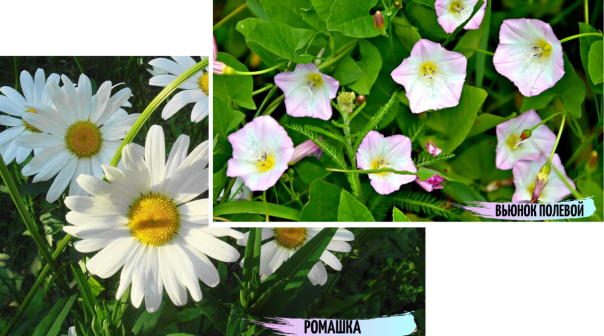
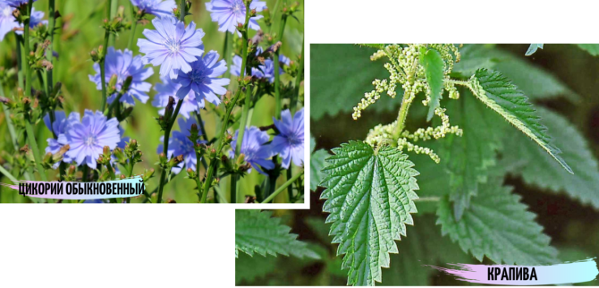
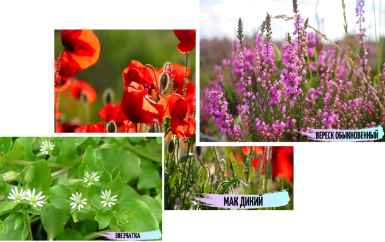
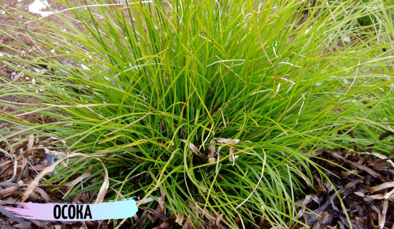

Плодородие почвы напрямую зависит от ее химического состава. И теперь встает вопрос, можно ли без анализа определить состав почвы на своем участке?
На самом же деле, природными растениями-индикаторами служат обычные сорняки. Опытный огородник, изучив растительность, может сделать выводы о:
- кислотно-щелочном балансе почвы;
- уровне грунтовых вод;
- засоленности;
- наличии минералов.
Уровень кислотности
Есть масса методов определить PH почвы, к примеру лакмусовой бумагой. Но, также одним из наиболее простых способов является определение кислотности по сорным растениям.
- кислую почву (PH до 5) предпочитают: мята полевая, щавель, иван-да-марья, хвощ, подорожник;
- Важно! Большинство дикорастущих и культурных растений хорошо развиваются на слабокислых и нейтральных почвах.
- Дополнительную информацию о грунте можно получить с помощью уксуса. Если после полива земли 9% раствором уксуса образуется пена – почва щелочная (что бывает редко). Если пена не появилась, грунт – кислый
- слабо кислую (PH от 5 до 6,6) – ромашка, лебеда, вьюнок полевой;
- на нейтральной почве (РН 6,6-7,2) растут: редька полевая, василек, мать-и-мачеха, бодряк огородный, лютик, обилие крапивы, красного клевера и лебеды.
- щелочная почва (от 7,3) подходит: фиалке полевой, шалфею луговому, люцерне, льнянке, горчице полевой, маку дикому.
Наличие азота
Азот – ценный минерал, в котором растения особо нуждаются весной и ранним летом. Нужно понимать, богат ли участок азотом, чтобы не перестараться с внесением удобрений в начале сезона.
- о недостатке азота сигнализируют: клевер белый, очиток, вереск обыкновенный, фиалка трехцветная, морковь дикая, пупавка, подорожник ланцетный
- Нехватку азота исправят удобрения: мочевина, селитра, сульфат аммония.
- на насыщенность грунта азотом указывают: цикорий обыкновенный, лебеда, крапива двудомная, сныть, пустырник, звездчатка средняя.
Калий и магний
- Для питания растений важны и другие минералы, к примеру, магний и калий. Магний участвует в образовании хлорофилла, необходимого для фотосинтеза. Минерал особенно необходим в период роста и вегетации растений.
- Калий повышает устойчивость к болезням, улучшает вкусовые качества плодов.
- О насыщенности грунта калием сигнализируют лебеда и борщевик.
- Признак магния – наперстянка, морозник дикий и дубровник обыкновенный.
Если магния и калия в почве мало, придется прибегнуть к помощи удобрений.
Глина, песок, известняк и соль
Механический состав почвы зависит от количества частиц различных пород. Зная свою почву, огородник понимает, как организовать полив, насколько часто нужно рыхлить землю.
Узнать состав почвы легко. Вскопал участок и понял: много песка – почва песчаная или супесчаная. На лопате глина? Значит, глинистая земля или суглинок. Еще один способ определить группу грунта – взглянуть на биоиндикаторы:
- на глинистых почвах замечательно растут одуванчик, подорожник, мята полевая, мать-и-мачеха, хвощ, бодяк огородный, лютик ползучий;
- песчаный грунт – коровяк, мак дикий, звезчатка средняя, вереск, малочай;
- известняк – мать-и-мачеха, прострел, молочай, люцерна, лютик, льнянка.
О засоленности почвы скажут солерос и лебеда. На наличие тяжелых металлов намекнут сон-трава, фиалка, анютины глазки.
Уровень грунтовых вод
На близкий горизонт воды всегда указывают калужница и хвощи, сигнализирующие об уровне воды до 20-30 см от поверхности земли.
Кроме того биоиндикаторами служат:
- таволга 0,5- 1м.;
- рогоз - до 1 м.
- чина, мятлик, мята полевая – 1-1,5 м;
- мать-и-мачеха, крапива, осока, болиголов, наперстянка, купальница европейская. До воды около 1,5 м.
- солодка – от 1,5 до 5 м.;
- камыш, тростник, вейник, лютик ползучий, незабудка – до 2 м.;
- ива – около 1-1,5 м;
- конский щавель, бодяк огородный, сердечник луговой – 2-3 м;
- ольха – около 3 м;
- подорожник, пырей – от 3 до 5 м.
Влажные участки земли предпочитают тополь, смородина, лабазник.
Внимание! Несколько деревьев наклоненных в одну сторону – признак высокого уровня водоносного слоя. На сухом же грунте селятся: ромашка, полынь, дрема белая, горицвет летний и подорожник.
  